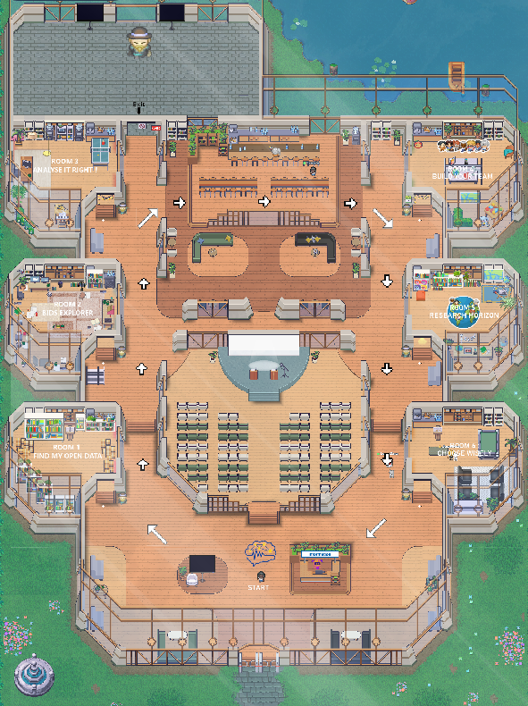
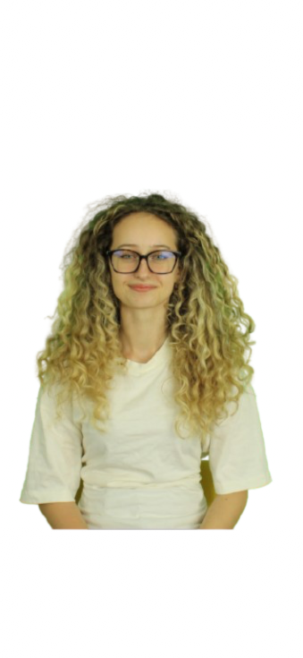

Le Contexte & L'Objectif
Le Projet EEG101
L'électroencéphalographie (EEG) est un outil essentiel en neurosciences, mais ses pratiques manquent de standardisation éthique et méthodologique. Dans le cadre du projet européen EEG101, nos clients ont rédigé un "Community Framework" invitant les chercheurs à s'engager sur 3 grands axes.
Notre Mission
Créer un espace virtuel sur WorkAdventure pour sensibiliser la communauté et les inviter à partager au Community Framework EEG101. L'enjeu cognitique est le suivant : Comment adapter une plateforme de jeu à un public professionnel scientifique non forcémentinitié aux Jeux vidéos et plateformes interactives ?
Les 3 Piliers du Framework
- 🔬 Validité scientifique : Intégrité, robustesse et reproductibilité.
- 🌍 Démocratisation : Accessibilité et inclusion des savoirs.
- 🌱 Responsabilité : Impact socio-environnemental et éthique.
Conception Centrée Utilisateur (CCU)
Lors du 6 novembre, lors de la conférence de lancement du projet EEG101, nous avons observé qu'une dizaine de scientifiques se sont perdus ou n'ont pas réussi à s'adapter à l'environnement. Pour répondre à la désorientation observée, nous avons mené des tests utilisateurs rigoureux (protocole d'observation, pensée à voix haute, entretiens) auprès de profils représentatifs (ex: enseignants-chercheurs).
1. Problèmes Identifiés
- Peur de l'erreur : Crainte de cliquer au mauvais endroit ou d'interagir par erreur dans un contexte professionnel.
- Problème d'accessibilité : Difficulté à accéder aux différents items/objets dans le jeu.
- Désorientation : Manque d'une vue globale ("map") et d'un chemin clair pour naviguer.
2. Entretien & Faisabilité
Nous avons rencontré le créateur de WorkAdventure (Greg) pour explorer les limites techniques de l'outil et valider nos idées de création (gestion des PNJ, silent zones, pop-ups).
3. Solutions Apportées
- Proposition de Créer une Antichambre / Tutoriel isolée pour tester les commandes sans pression.
- Passage d'une carte en "Archipel" à une Map "Hackaton", beaucoup plus dirigiste.
- Utilisation de Genially pour des mini-jeux clairs et encapsulés.
Le Jeu Final
Notre carte structure l'apprentissage en plusieurs étapes claires :
- L'Antichambre : Espace d'apparition avec prise en main des contrôles avec des messages d'information.
- L'Agora : Zone centrale ("General meeting room") pour les conférences orales.
- Les 6 salles de Jeux: Chaque jeu illustre un pilier du Community Framework notamment sur "Rendre les données FAIR", la démocratisation des données et la Responsabilité Scientifique sociau-environnementale présentés via Genially ou Site Web.
- La Zone d'entrée/Sortie Le but ultime du parcours, où le chercheur peut découvrir et signer le Community Framework.

Aperçu de la map WorkAdventure "Hackaton"
Outils & Contraintes
- WorkAdventure : Moteur 2D imposant des images légères et limitant les utilisateurs simultanés (15 max hors événement).
- Genially for Education : Outil de création de contenu interactif intégré via iframes dans la map.
- Sites internet: Conception et développement de pages web pour l'implémentation des jeux et présenter le projet.
Engagement DD&RS
Ce projet s'inscrit pleinement dans une démarche de Responsabilité Sociétale et Environnementale :
- Écologie : Espace de conférence virtuel permettant de limiter les déplacements internationaux en avion dans le cadre du Community Framework qui lui même incite à prendre des Responsabilité Socio-environnementales.
- Social : Outil en libre accès favorisant la démocratisation des connaissances scientifiques.
- Éthique : Promotion de la transparence et de la reproductibilité des données (Validité scientifique, données FAIR).
L'Équipe de Projet
Étudiant et Étudiantes en 1ère année à l'ENSC - Bordeaux INP

Charline Ingrand

Louna Morlans
Resp. Communication

Josépha Pfleger

Lucaïna Rakotomalala